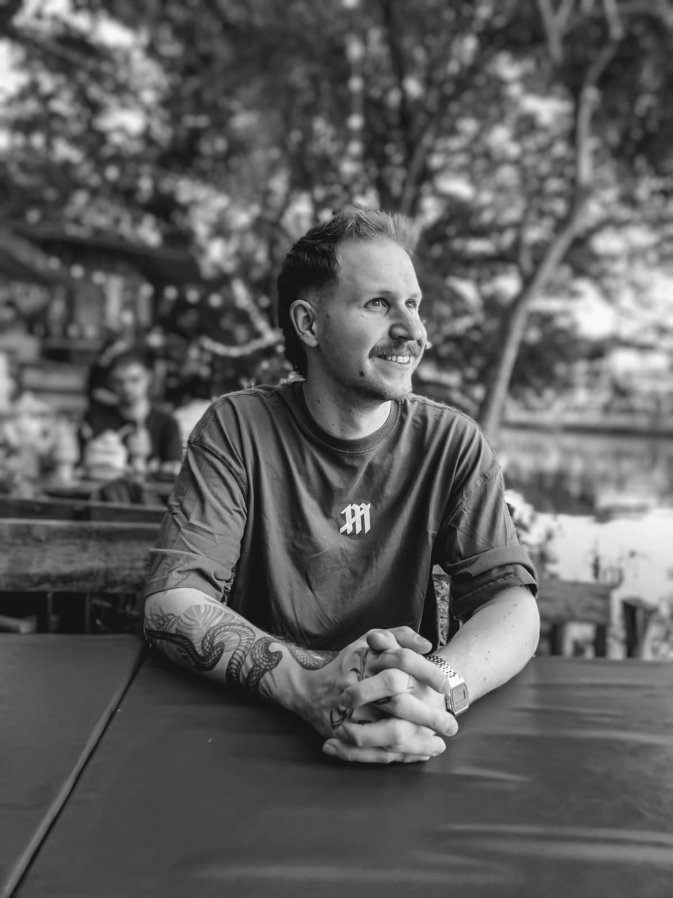

2025 - Heute
Portalmanagement & Prozessautomatisierung
GFN GmbH

Hallo, ich bin Tim. Ich studiere Medieninformatik, habe ursprünglich aber als Tischler angefangen. Aus dieser Zeit nehme ich bis heute mit, genau hinzuschauen, sorgfältig zu planen und Dinge von Anfang an durchzudenken.
Nach einigen Jahren im Handwerk habe ich gemerkt, dass ich meiner Kreativität und meiner Begeisterung für moderne Technologien mehr Raum geben möchte. Ich wollte nicht nur Dinge gestalten, sondern digitale Lösungen entwickeln, die flexibel, zugänglich und nah am Alltag der Menschen sind.
Mich reizt es, einfache Dinge neu zu denken, Lücken zu erkennen und Lösungen zu bauen, die verständlich, nützlich und technisch zeitgemäß sind. Mein Ziel ist es, Projekte strukturiert voranzubringen und sie mit einem Blick für Gestaltung und Funktion umzusetzen.
2025 - Heute
GFN GmbH
2023 - Heute
Bachelor-Studium mit Fokus auf Web-Entwicklung und kreative Technologien.
2014 - 2017
Handwerkliche Ausbildung mit Holzarbeiten, technischem Zeichnen, Lackieren und ersten Erfahrungen in der Metallbearbeitung.
Neben dem Programmieren und Gestalten interessiere ich mich für: